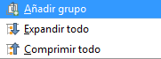
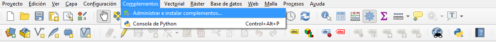
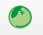

Lizmap¶
1 Preparar un proyecto QGIS para publicarlo en la Web¶
1.1 Crear un proyecto Crear un proyecto en QGIS y agregar los datos necesarios estos pueden ser de diferente tipo, por ejemplo: - Archivos vectoriales de datos geográficos
ESRI Shapefile MapInfo TAB and MIF/MID GeoJSON
- Archivos de datos geográficos RASTER
- GeoTIFF Arc/Info ASCII Grid netCDF
- Bases de datos geográficas
- PostgreSQL / PostGIS MSSQL spatial Oracle locator / spatial
..imagen:: /imagenes/lz_data.png
1.2 Organice y manipule las capas en la leyenda
-_Agregar grupos_ dando clic derecho en la sección vacía de la leyenda y seleccionar añadir grupo  -_Mover las capas y los grupos arrastrandolos y soltandandolos -_Cambie el nombre de las capas_ y grupos con la tecla F2 o en la ventana de propiedades de la capa -Manipule el orden de representación de las capas:
{kind=link}
- modificando el orden de las capas de la leyenda: las capas superiores se visualizan sobre las demás
- especificando el orden de las capas desde menú Ver> Paneles> Orden de capas
Agregar un título al proyecto y guardarlo en formato .qgs en el directorio de trabajo.
1.1 Configurar el proyecto para Lizmap¶
1.1.1 Instalar el complemento Lizmap
El complemento Lizmap está disponible a través del repositorio oficial del proyecto QGIS: http://plugins.qgis.org/plugins/lizmap/ Para instalarlo, simplemente hágalo como cualquier complemento de QGIS:
Menú ‣ Complementos ‣ Administrar e instalar complementos  Buscar Lizmap Instalar el complemento ..imagen:: /imagenes/comp_liz.png
{kind=link}
El complemento ya aparecerá en el menú y en a barra de herramientas Web 
{kind=link}
1.1.2 Organización del complemento Lizmap
El complemento está organizado en 6 pestañas:
Map options: las opciones generales del mapa Layers: las opciones de cada capa Baselayers: las capas base utilizadas en la Web Locate by layer: Attribute table: Layer editing: Tooltip layers: Filter layer by user: Dataviz: Time manager: Atlas: Filter data with form: Log:
Y tiene 4 botones de acción:
Aceptar Cancelar Aplicar Ayuda
..imagen:: /imagenes/vista_lm.png
3 Configurar las capas y los grupos¶
3.1 La configuración de la capas se realiza en la pestaña Layers
Esta pestaña muestra el árbol de capas del proyecto con la misma organización que se define en el panel Capas. Puede seleccionar uno de los elementos del árbol, una capa o grupo, y luego configurar las opciones para el grupo o capa seleccionados.
Información sobre grupos y capas:
Título: se utilizará en el árbol de capas web en lugar del nombre. Para las capas, el campo de título está vinculado al de la pestaña Metadatos en la ventana de propiedades de la capa. Resumen: permite describir la capa o grupo. Se muestra en el mouseover. Para las capas, el Campo abstracto está vinculado al de la pestaña Metadatos en la ventana de propiedades de la capa. Enlace: la dirección web de un documento o una página web que describe la capa o el grupo. Aparece un icono (i) en la leyenda si se ha enviado el enlace. Puede utilizar la carpeta multimedia, consulte Medios en Lizmap.
..imagen:: /imagenes/lz_layers.png
Opciones de capas:
Conmutado: le permite especificar si una capa se muestra por defecto Activar ventana emergente: habilita ventanas emergentes de información sobre el interrogatorio del mapa haciendo clic. Ver Cómo configurar ventanas emergentes Ocultar imagen de leyenda: le permite ocultar la leyenda de la capa en la interfaz web Mostrar en árbol de leyendas: alterna la visibilidad de la capa en el árbol de capas; cuando está desactivado, no permite al usuario administrar su visualización Capa base: establece la capa como mapa base. Esto será accesible a través de la lista de mapa base. Mosaico único: selecciona el modo de visualización de la capa. Puede mostrarse como varias imágenes, mosaicos o una sola imagen generada por el servidor Formato de imagen: png: formato de imagen completo, gama completa de colores con transparencia png; modo = 16 bits: formato de imagen más claro, color del panel restringido con transparencia png; mode = 8bit: formato de imagen muy ligero, el panel de color se restringe al máximo con transparencia, posible degradación de la imagen jpeg: formato de imagen claro sin transparencia con pérdida de calidad
7 Referencias